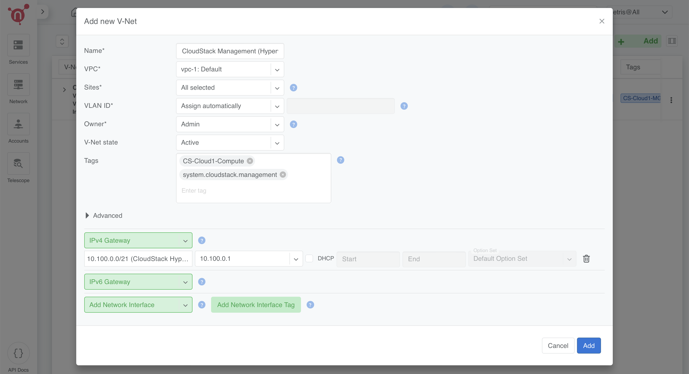

Join Slack
Join Slack
Prerequisites
ISP upstreams connected through BGP
Step-by-Step Configuration Instructions for the Netris Controller
Accessing the Netris Controller * Access the Netris Controller UI by navigating to its IP or hostname in your web browser. * Log in using your administrator credentials.
IPAM Setup
The Netris IPAM allows users to manage your IP addresses and monitor pool usage effectively. With a hierarchical view, IPAM facilitates subnetting tasks by assigning specific purposes (roles) to subnets or addresses before utilizing them in services like V-Net, NAT, and Load Balancing.
Create an Allocation
Allocations represent IP ranges assigned to an organization, such as private IP ranges or those obtained from RIR/LIR. Subnets are created within allocations and serve as prefixes for various services.
Navigate to: Network → IPAM → +Add.
In the Add Allocation form, fill in the following:
Prefix: 10.0.0.0/8.
Name: Provide a descriptive name (e.g., “Private IP Allocation”).
VPC: Associate the allocation with the default VPC (vpc-1:Default).
Tenant: Assign the allocation to a tenant (e.g., “Admin”).
Type: Select Allocation.
Click Add to create the allocation.

Create Subnets
Subnets are prefixes that fall under allocations and serve specific purposes. In this step, we define loopback and management subnets within the Netris allocation.
Loopback Subnet
The loopback subnet is used for assigning unique IPs to each device (e.g., hypervisors, softgates) for BGP peering and internal communication.
Prefix: 10.0.0.0/16.
Name: “Loopback IP Subnet”.
VPC: Select vpc-1:Default.
Tenant: Assign to “Admin”.
Type: Select Subnet.
Purpose: Choose Loopback.
Sites: Associate with your Netris site.

Management Subnet (Optional)
The management subnet provides connectivity for server administration.
Prefix: 10.10.0.0/16.
Name: “OOB Management Subnet”.
VPC: Select vpc-1:Default.
Tenant: Assign to “Admin”.
Type: Select Subnet.
Purpose: Choose Management.
Default Gateway: 10.10.0.1.
Sites: Associate with your Netris site.
Note
If your infrastructure does not have a dedicated management network, you can skip this step.

Adding Subnets in Netris
Navigate to Network → IPAM → +Add.
Fill in the fields for each subnet as per the configurations above.
Click Add to save.
Refer to the screenshots for guidance:
Loopback Subnet Configuration
Management Subnet Configuration (if applicable)
Inventory Setup
The Inventory Setup in Netris allows you to add and manage devices such as switches, SoftGates, and servers.
Adding Servers
In this step, we’ll configure the servers for the Netris inventory. The first server (Server 1) will be configured differently from the remaining three servers (Server 2, 3, and 4), which act as CloudStack KVM hypervisors.
Step 2: Add Servers
Server 1 (CloudStack Management Node):
Name: Server-1
Tenant: Assign to Admin.
Description: Leave blank or add relevant details.
Type: Select Server.
Site: Assign to your site.
AS Number: Select Disabled.
Main IP Address: Select Disabled (as no Main IP is needed).
Management IP Address:
Assign an IP from the Management Subnet (e.g., 10.10.10.1) if OOB is available.
Select Disabled if no management network is present.
Role: Generic.
Port Count: Set to 4.
Tags:
iface.eth1=CS-Cloud1-MGMT
iface.eth2=CS-Cloud1-MGMT
Click Add to save the configuration for Server 1.
Note
Why isn’t underlay enabled for Server 1? Server 1 does not run the netris-cloudstack-agent, and its traffic will be encapsulated in VLAN instead of VXLAN.
Server 2, 3, and 4 (CloudStack KVM Hypervisors):
Name:
Server-2 for the first hypervisor.
Server-3 for the second hypervisor.
Server-4 for the third hypervisor.
Tenant: Assign to Admin.
Description: Leave blank or add relevant details.
Type: Select Server.
Site: Assign to your site.
AS Number: Assign automatically or provide a unique ASN.
Main IP Address: Assign from the Loopback Subnet:
10.0.8.2 for Server 2.
10.0.8.3 for Server 3.
10.0.8.4 for Server 4.
Management IP Address: (If OOB is present, set the IP. Otherwise, select `Disabled`.)
10.10.10.2 for Server 2.
10.10.10.3 for Server 3.
10.10.10.4 for Server 4.
Role: Hypervisor:CloudStack
Port Count: Set to 4.
Tags:
iface.eth1=CS-Cloud1-Compute
iface.eth2=CS-Cloud1-Compute
Custom Field:
For each server, use the following JSON with the specific ipv4 address:
Server 2:
{ "cloudstack": { "mgmt": { "bridge-name": "cloudbr0", "ipv4": "10.100.1.2/21", "nameservers": ["1.1.1.1", "8.8.8.8"] } } }
Server 3:
{ "cloudstack": { "mgmt": { "bridge-name": "cloudbr0", "ipv4": "10.100.1.3/21", "nameservers": ["1.1.1.1", "8.8.8.8"] } } }
Server 4:
{ "cloudstack": { "mgmt": { "bridge-name": "cloudbr0", "ipv4": "10.100.1.4/21", "nameservers": ["1.1.1.1", "8.8.8.8"] } } }

For each server, click Add to save the configuration.
Note
If you don’t have a management network, simply select `Disabled` in the Management IP Address field.
Repeat the process for Server 2, Server 3, and Server 4, updating the Main and Management IP addresses and JSON as per the above configuration.
📌 What is the purpose of these configurations?
Tags will be used later in network assignments (V-Nets) to ensure that networks are correctly assigned to the hypervisors.
JSON Configuration serves as a template that the
netris-cloudstack-agentwill use to configure cloudbr0 on the hypervisor nodes.
Terraform Example for Adding a Server
The following Terraform configuration example demonstrates how to automate server provisioning in Netris:
resource "netris_server" "server_1" {
name = "Server-1"
tenantid = "Admin"
siteid = data.netris_site.sv.id
description = "CloudStack Management Node"
role = "generic"
portcount = 4
tags = ["iface.eth1=CS-Cloud1-MGMT", "iface.eth2=CS-Cloud1-MGMT"]
resource "netris_server" "server_hypervisor" {
count = 3
name = "Server-${count.index + 2}"
tenantid = "Admin"
siteid = data.netris_site.sv.id
description = "CloudStack Hypervisor Node"
role = "hyperv_cs"
portcount = 4
asnumber = "auto"
tags = ["iface.eth1=CS-Cloud1-Compute", "iface.eth2=CS-Cloud1-Compute"]
customdata = <<EOF
{
"cloudstack": {
"mgmt": {
"bridge-name": "cloudbr0",
"ipv4": "10.100.1.${count.index + 2}"/21",
"nameservers": ["1.1.1.1", "8.8.8.8"]
}
}
}
EOF
Creating Servers’ Links
To fully establish the network topology, you need to create links between the leaf switches and servers as illustrated in the first diagram.
This section explains how to create the links step-by-step while considering two scenarios:
If an OOB network exists: Enable Underlay on all hypervisor links.
If no OOB network exists: Leave Underlay disabled on hypervisors initially, then enable it after the Netris-CloudStack Agent is installed.
Step 1: Navigate to Topology
In the Topology view, right-click on one of the leaf switches that will be part of the link (e.g., Leaf-1).
Select Create Link from the context menu.
Step 2: Configure the Link
From Section:
Device: Automatically selected based on the device you right-clicked.
Port: Choose the port on the selected device (e.g., swp1 on Leaf-1).
To Section:
Device: Select the other device participating in the link (e.g., Server 1).
Port: Choose the appropriate port on the second device (e.g., eth1 on Server 1).
Options:
Underlay:
If an OOB network exists, mark the checkbox for all hypervisor links.
If no OOB network exists, leave Underlay unchecked on hypervisors for now.
Click Add to save the link.
Step 3: Repeat for All Server Interfaces
Follow the same link creation process for all server interfaces.
Ensure that Underlay is unchecked for Server 1.
Note
Handling Deployments Without OOB If your infrastructure does not have an OOB network, you will initially leave Underlay disabled on hypervisors. In the next steps, you will configure a temporary VLAN-based VNet to provide temporary internet access for installing the netris-cloudstack-agent. Once the agent is installed, you will return to these links and enable Underlay for full integration.

Key Considerations
- ✔ Server 1 Does Not Use Underlay
Unlike CloudStack hypervisors, Server 1 does not have the Netris-CloudStack Agent installed. This means it does not require VXLAN encapsulation and instead operates on a VLAN-based connection.
- ✔ Dynamic Hypervisor Integration
With OOB: Hypervisors get instant network provisioning via netris-cloudstack-agent.
Without OOB: Hypervisors initially operate on VLAN-based temporary connectivity, later transitioning to Underlay-enabled VXLAN networking.
This ensures flexibility, whether an OOB network exists or not, while maintaining a structured and seamless deployment process. 🚀
Terraform Example for Creating Servers’ Links
The following Terraform configuration example demonstrates how to automate servers’ links in Netris:
resource "netris_link" "srv1-eth1-to-leaf1-swp1" {
ports = [
"swp1@Leaf-1",
"eth1@Server-1"
]
depends_on = [netris_server.server_1, netris_switch.leaf1]
}
resource "netris_link" "srv2-eth1-to-leaf1-swp2" {
ports = [
"swp2@Leaf-1",
"eth1@Server-2"
]
underlay = "enabled"
depends_on = [netris_server.server_2, netris_switch.leaf1]
}
Optimize BGP Overlay for Hypervisor
This step is crucial for BGP/EVPN VXLAN integration with hypervisor networking. Enabling this optimization ensures that a large number of hypervisor virtual networking EVPN prefixes do not overflow the switch TCAM, maintaining efficient and scalable routing within the network fabric.
⚠ Warning: This is a disruptive action!
Do not apply this change in a production environment without proper planning and scheduled maintenance. Enabling this setting reconfigures the fabric, which may cause temporary disruptions in BGP peerings and VXLAN routing.
Navigate to Inventory Profiles
Go to Network → Inventory Profiles.
Open the inventory profile used during the creation of the switches.
Enable the Optimize BGP Overlay Option
Locate the Fabric Settings section within the profile.
Enable the checkbox for Optimize BGP Overlay for Hypervisor Integrated Fabric.
- Leave all other fabric-related settings unchanged.
(Modifying unrelated settings may lead to unexpected behavior.)
Save and Apply Changes
Review the updated settings to confirm accuracy.
Click Save to apply the changes.
Once saved, this setting will optimize BGP overlays for hypervisor networking, improving the efficiency of routing between the hypervisors and the fabric.
Warning
This step is limited to enabling the Optimize BGP Overlay option. Other parameters within the inventory profile are irrelevant to this process and should remain unchanged to avoid unnecessary complexity.

Adding Subnets for CloudStack Cluster
In this step, we’ll configure multiple subnets within the Netris IPAM to support the CloudStack deployment. These subnets are categorized based on their purpose and usage within the infrastructure.
We will create:
Five Common-purpose subnets.
One NAT-purpose subnet.
An Optional OOB subnet (for infrastructures without an existing OOB network).
Note
The subnet sizes provided in this section are examples. You should allocate subnet sizes based on your specific requirements and infrastructure constraints.
Example IP Plan for CloudStack
This section provides example allocations for a CloudStack deployment. You can adjust these based on your network design.
Private RFC1918 IP Address Space (Example)
10.0.0.0/8 (Allocation) – Private IP range
├── 10.55.0.0/21 (Subnet) - Temporary OOB Network (for non-OOB infrastructures)
├── 10.99.0.0/21 (Subnet) - CloudStack Management (Management Nodes)
├── 10.100.0.0/21 (Subnet) - CloudStack Management (Hypervisor Nodes)
Publicly Routable IP Address Space (Example)
203.0.113.0/24 (Allocation) – Public range
├── 203.0.113.0/27 (Subnet) - ACS System VMs
├── 203.0.113.32/27 (Subnet) - Infrastructure NAT
├── 203.0.113.128/25 (Subnet) - ACS Virtual Routers
Public Allocation for Netris Services (Example)
198.51.100.0/24 (Allocation) – Public range for Netris services
├── 198.51.100.0/25 (Subnet) - Netris services subnet for ACS
Optional: Defining a Temporary OOB Network
Note
If your infrastructure does not have an OOB network, you must define a temporary OOB subnet to provide internet access for installing the netris-cloudstack-agent on hypervisors.
This subnet will later be used to create a VNet, which will act as a temporary OOB.
It allows servers to use traditional VLAN encapsulation before transitioning to VXLAN.
Example Temporary OOB Subnet
- Prefix: 10.55.0.0/21 (Example)
- Name: Temporary OOB Subnet
- Purpose: Common
- VPC: Select vpc-1:Default
- Tenant: Assign to Admin
- Type: Subnet
- Sites: Select the relevant site.
Note
If your infrastructure already has an OOB network, skip this step.
Define Subnets for CloudStack Management
- Prefix: 10.99.0.0/21 (Example)
- Name: CloudStack Management Nodes
- Purpose: Common
- VPC: Select vpc-1:Default
- Tenant: Assign to Admin
- Type: Subnet
- Sites: Select the relevant site.
- Prefix: 10.100.0.0/21 (Example)
- Name: CloudStack Hypervisor Nodes
- Purpose: Common
- VPC: Select vpc-1:Default
- Tenant: Assign to Admin
- Type: Subnet
- Sites: Select the relevant site.

Define Public Allocation
- Navigate to: Network → IPAM → +Add
- Prefix: (e.g., 203.0.113.0/24) or a public range provided by your ISP
- Name: Public Allocation 1
- VPC: Select vpc-1:Default
- Tenant: Assign to Admin
- Type: Allocation

Define CIDR for CloudStack System VMs
In this step, we define a dedicated subnet for CloudStack System VMs, which will be used as their primary network in the subsequent steps. On cloudstack side, this CIDR will be exclusively reserved for system VMs
- Prefix: Use a portion of the public allocation (e.g., 203.0.113.0/27)
- Name: Public Subnet for System VMs
- Purpose: Common
- VPC: Select vpc-1:Default
- Tenant: Assign to Admin
- Type: Subnet
- Sites: Select the relevant site.

Defining CIDR for Internal Use (Infrastructure NAT)
- This subnet is used for internal NAT purposes, such as:
Accessing CloudStack GUI using a public IP.
Providing internet access (SNAT) for all servers.
This subnet is designed to handle infrastructure-level NAT requirements efficiently while keeping the IP allocation minimal.
- Prefix: Use a portion of the public allocation (e.g., 203.0.113.32/27)
- Name: Public Subnet for Infrastructure NAT
- Purpose: NAT
- VPC: Select vpc-1:Default
- Tenant: Assign to Admin
- Type: Subnet
- Sites: Select the relevant site.

Define CIDR for CloudStack Virtual Routers (VRs)
This step involves defining the CIDR for CloudStack Virtual Routers (VRs), which will be used in the ACS Virtual Routers V-Net. Each VPC’s VR will pick an IP address from this pool.
Why Use Public IPs for Virtual Routers?
- CloudStack’s VPN services require publicly routable IPs for VPN connectivity. However, if:
VPN is not required or
A private VPN endpoint is already operational in your infrastructure, then using a private IP range is a valid alternative.
Example Configuration
- Prefix: (Choose based on your requirements)
- Public: Use a portion of the public allocation (e.g., 203.0.113.128/25)
- Private: Use an internal range (e.g., 10.200.0.0/24)
- Name: Subnet for Virtual Routers
- Purpose: Common
- VPC: Select vpc-1:Default
- Tenant: Assign to Admin
- Type: Subnet
- Sites: Select the relevant site.
Public Allocation/Subnet for Netris Services
This CIDR is used by CloudStack to manage NAT and Load Balancer services directly in Netris, bypassing the Virtual Routers (VRs). When a user creates a NAT rule or Load Balancer in CloudStack, the system selects a free IP from this range and creates that service in Netris.
- Navigate to: Network → IPAM → +Add
- Prefix: (e.g., 198.51.100.0/24) or a public range provided by your ISP
- Name: Public Allocation for Netris Services
- VPC: Select vpc-1:Default
- Tenant: Assign to Admin
- Type: Allocation
Define the Netris Services Subnet
- Prefix: Use a portion of the public allocation (e.g., 198.51.100.0/25)
- Name: Subnet for Netris Services
- Purpose: Common
- VPC: Select vpc-1:Default
- Tenant: Assign to Admin
- Type: Subnet
- Sites: Select the relevant site.
Summary
Subnet sizes are examples and should be adjusted based on your needs.
The temporary OOB subnet is only needed if there’s no existing OOB network.
Public vs. Private subnets: Some services require public subnets, while others can operate on private ranges.
Enabling Internet Connectivity for ACS Servers
To provide outbound connectivity for both CloudStack Management Nodes and Hypervisor Nodes, we will configure SNAT (Source NAT) rules in the Netris Controller. These rules utilize the previously defined 203.0.113.32/27 NAT pool to enable access to external networks.
Note
This configuration ensures that ACS servers can reach external resources while maintaining internal network security.
If your infrastructure does not have an OOB network and you created a temporary OOB subnet, you must also enable SNAT for that subnet to allow internet access for installing the netris-cloudstack-agent on hypervisors.
Step 2: Configure SNAT Rules
SNAT Rule for CloudStack Management Nodes
- Name: SNAT CloudStack Management Nodes
- Site: Select the relevant site.
- State: Enabled
- Action: SNAT
- Local VPC: Select vpc-1:Default.
- Protocol: ALL
- Source Address: 10.99.0.0/21 (Example)
- Destination Address: 0.0.0.0/0 (Allowing outbound traffic to any destination)
- SNAT to: SNAT to IP
- IP: 203.0.113.32/32 (Example IP from previously created NAT Pool)
- Comment: *(Optional, e.g., "Outbound access for CloudStack Management Nodes")*
Click Add to save the rule.

SNAT Rule for CloudStack Hypervisor Nodes
- Name: SNAT CloudStack Management Hypervisors
- Site: Select the relevant site.
- State: Enabled
- Action: SNAT
- Local VPC: Select vpc-1:Default.
- Protocol: ALL
- Source Address: 10.100.0.0/21 (Example)
- Destination Address: 0.0.0.0/0 (Allowing outbound traffic to any destination)
- SNAT to: SNAT to IP
- IP: 203.0.113.32/32 (Example IP from previously created NAT Pool)
- Comment: *(Optional, e.g., "Outbound access for CloudStack Hypervisors")*
Click Add to save the rule.
(Optional) SNAT Rule for Temporary OOB Subnet
Note
If your infrastructure does not have an OOB network and you created a temporary OOB subnet, configure SNAT for that subnet so that hypervisors can reach external repositories to install the netris-cloudstack-agent.
- Name: SNAT Temporary OOB Network
- Site: Select the relevant site.
- State: Enabled
- Action: SNAT
- Local VPC: Select vpc-1:Default.
- Protocol: ALL
- Source Address: 10.55.0.0/21 (Example)
- Destination Address: 0.0.0.0/0 (Allowing outbound traffic to any destination)
- SNAT to: SNAT to IP
- IP: 203.0.113.32/32 (Example IP from previously created NAT Pool)
- Comment: *(Optional, e.g., "Temporary internet access for CloudStack Hypervisors")*
Click Add to save the rule.
Step 3: Verify Configurations
Navigate to Network → NAT in the Netris Controller.
Verify that all SNAT rules are listed with: - The correct source addresses. - The assigned SNAT IP.
Enabling Access to CloudStack Management GUI
To provide external access to the CloudStack Management GUI hosted on Server 1, we need to create a DNAT rule. This rule will forward traffic from the public NAT IP to the internal management IP of Server 1 on port 8080, enabling users to access the CloudStack GUI externally once CloudStack is installed and configured.
Step 1: Navigate to NAT
Go to: Network → NAT → +Add.
Step 2: Configure the DNAT Rule
Fill in the fields as follows:
- Name: DNAT CloudStack GUI
- Site: Select the relevant site.
- State: Enabled
- Action: DNAT
- Local VPC: Select vpc-1:Default.
- Protocol: TCP
- Source Address: 0.0.0.0/0 (to allow access from any external address).
- Source Port: 1-65535 (allow any source port).
- Destination Address: Select available public NAT IP from previously created NAT Pool (e.g., 203.0.113.33/32).
- Destination Port: 80 (HTTP).
- DNAT to IP: Set to the internal IP of Server 1 (10.99.1.1/32).
- DNAT to Port: 8080 (CloudStack Management GUI port).
- ACL Port Group: Set to None unless specific ACL rules are required.
- Comment: Optional.
Save the rule by clicking Add.

Step 3: Reminder
This rule will not take effect until:
Server 1 is configured with the IP address 10.99.1.1.
CloudStack Management software is installed on Server 1, and it is set to listen on port 8080 for its GUI.
Creating CloudStack Networks
V-Nets define the foundational network segments (VXLANs or VLANs with default gateway IPs) within Netris, serving as the backbone for CloudStack’s management and system-level operations. In this step, we’ll create distinct V-Nets, each serving a specific purpose within the CloudStack infrastructure.
Note
If your infrastructure does not have an OOB network and you created a temporary OOB subnet in the previous step, you should also create a VNet for that subnet to provide internet access for installing netris-cloudstack-agent on hypervisors.
Overview of V-Nets and Their Purpose
CloudStack Management (Management Nodes): - A network for CloudStack Management Node (Server 1). - Used to handle internal traffic between the management node and other components in the environment.
CloudStack Management (Hypervisor Nodes): - A network dedicated to managing hypervisor traffic. - Configured with a special tag (system.cloudstack.management) to instruct the Netris-CloudStack Agent that this V-Net is mapped to cloudbr0.
CloudStack System VMs: - A network to provide a public IP range for System VMs that manage internal CloudStack operations (e.g., console proxy, secondary storage VM). - Public-facing as required for certain services.
CloudStack Virtual Routers (VRs): - A network to provide IPs for Virtual Routers used within VPCs. - Handles tenant network services, such as DHCP, DNS, and VPN. - Can use either a public or private subnet based on whether public-facing services (e.g., VPN) are required.
(Optional) Temporary OOB Network: - A network created only if your infrastructure lacks OOB. - Used temporarily to provide internet access to hypervisors for installing netris-cloudstack-agent.
Step 2: Configure V-Nets
1. CloudStack Management (Management Nodes)
- Name: CloudStack Management (Management Nodes)
- VPC: Select vpc-1:Default
- Sites: Select the relevant site
- VLAN ID: Assign Automatically
- Owner: Assign to Admin
- V-Net State: Active
- IPv4 Gateway: Use 10.99.0.1 (from the 10.99.0.0/21 subnet)
- Network Interface Tags:
- Add the tag CS-Cloud1-MGMT and mark the ‘Untagged’ checkbox.
- These tags guide Netris to discover and associate the correct server NICs with this V-Net.
Click Save.

2. CloudStack Management (Hypervisor Nodes)
- Name: CloudStack Management (Hypervisor Nodes)
- VPC: Select vpc-1:Default
- Sites: Select the relevant site
- VLAN ID: Assign Automatically
- Owner: Assign to Admin
- V-Net State: Active
- IPv4 Gateway: Use 10.100.0.1 (from the 10.100.0.0/21 subnet)
- Tags:
- Add CS-Cloud1-Compute
- Add system.cloudstack.management (special tag that instructs the Netris-CloudStack Agent this V-Net is used for cloudbr0).
Click Save.
3. CloudStack System VMs
- Name: CloudStack System VMs
- VPC: Select vpc-1:Default
- Sites: Select the relevant site
- VLAN ID: Disabled
- Owner: Assign to Admin
- V-Net State: Active
- IPv4 Gateway: Use an appropriate gateway from the public subnet for system VMs (e.g., 203.0.113.1/27)
- Tags: Add CS-Cloud1-Compute
Click Save.

4. CloudStack Virtual Routers (VRs)
- Name: CloudStack VRs
- VPC: Select vpc-1:Default
- Sites: Select the relevant site
- VLAN ID: Disabled
- Owner: Assign to Admin
- V-Net State: Active
- IPv4 Gateway: Use an appropriate gateway from the public or private subnet for VRs (depending on your environment, e.g., 203.0.113.129/25)
- Tags: Add CS-Cloud1-Compute
Click Save.
(Optional) 5. Temporary OOB Network
Note
This VNet is only required if your infrastructure lacks an OOB network.
It provides temporary internet access to CloudStack hypervisors for installing the netris-cloudstack-agent.
- Name: Temporary OOB Network
- VPC: Select vpc-1:Default
- Sites: Select the relevant site
- VLAN ID: Assign Automatically
- Owner: Assign to Admin
- V-Net State: Active
- IPv4 Gateway: Use 10.55.0.1 (from the 10.55.0.0/21 subnet)
- Network Interface Tags:
- Add the tag CS-Cloud1-Compute and mark the ‘Untagged’ checkbox.
Click Save.
Step 3: Review and Verify
Navigate to Services → V-Net.
Confirm the following for all V-Nets: - Management V-Nets have automatically assigned VLAN IDs. - System V-Nets have VLAN IDs disabled. - Tags are applied correctly:
CS-Cloud1-MGMT for Management Nodes. (Network Interface Tag)
CS-Cloud1-Compute and system.cloudstack.management for Hypervisor Nodes. (Regular Tags)
Confirm the IPv4 Gateways match the correct subnets for each V-Net.